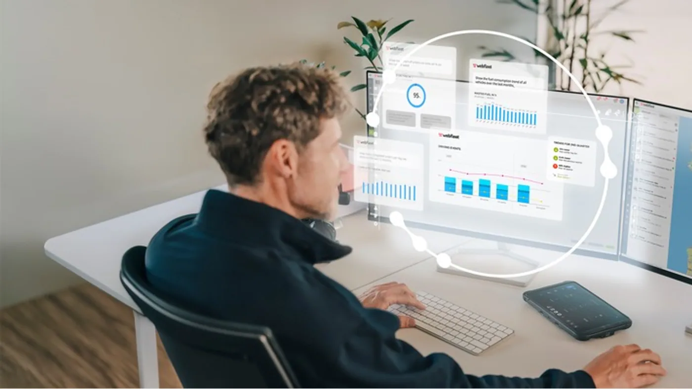

Webfleet, la solución de gestión de flotas de Bridgestone, anunció el 1 de septiembre de 2026 novedades para IAA Transportation. Fleet Insights reúne indicadores, tendencias y comparación con empresas similares. Asset Management 360 propone concentrar vehículos, remolques y otros equipos en una misma plataforma.
El comunicado distingue los plazos: Fleet Insights se declara disponible en los mercados Webfleet; las recomendaciones mediante inteligencia artificial dentro de Fleet Advisor están previstas para finales de octubre. Asset Management 360 tendrá una primera presentación en IAA, del 15 al 20 de septiembre en Hannover, y su lanzamiento comercial se proyecta para los meses siguientes.
La comparación de Fleet Insights utiliza más de 200 perfiles de flotas anonimizados, considerando variables como tamaño, composición y geografía. Es una descripción del proveedor, no una medición independiente de ahorro. Antes de contratar en Argentina deben confirmarse alcance local, compatibilidad, condiciones y fechas de cada función.
Del mapa a una decisión concreta
Análisis de Zabala Repuestos. Saber dónde está una unidad resuelve una pregunta; entender por qué no está trabajando resuelve otra. Una herramienta de análisis tiene valor cuando ayuda a distinguir espera de carga, mantenimiento, falta de conductor o una decisión de programación.
Ese cambio exige algo más que instalar equipos. La empresa necesita acordar qué considera tiempo productivo y quién revisará las excepciones. Si cada área usa una definición diferente, un tablero vistoso puede terminar reuniendo cifras que no llevan a una acción compartida.
Comparar flotas exige comparar trabajos
Un transporte de reparto y una operación de larga distancia no deberían evaluarse con la misma expectativa de paradas o kilometraje. Incluso dos unidades idénticas pueden trabajar en rutas distintas. Antes de aceptar una conclusión automática, conviene revisar qué factores se tuvieron en cuenta y cuáles quedaron afuera.
Las referencias externas pueden abrir una investigación, pero no reemplazan la experiencia de quienes conocen el recorrido. Una diferencia de consumo o utilización es una señal para preguntar, no una prueba suficiente de mala conducción o mantenimiento deficiente.

Por qué mirar también el semirremolque
La organización del transporte no termina en el tractor. Para que un viaje salga a tiempo, el equipo arrastrado debe estar localizado, disponible y preparado para la carga. Si esa información depende de mensajes dispersos, el personal puede perder tiempo buscando una unidad que está ocupada o pendiente de atención.
Como ejemplo ilustrativo, una empresa podría identificar que tiene equipos detenidos en una base mientras otra necesita más capacidad. El dato no resuelve por sí solo el traslado: permite analizar si conviene reorganizar recursos. Esa evaluación debe incluir recorrido, conductor y necesidades del cliente.
Una prueba piloto con preguntas medibles
Antes de extender una solución a toda la flota, conviene elegir un problema concreto. Puede ser reducir llamadas para localizar equipos, ordenar alertas o conocer cuánto dura una espera. Definir una situación inicial permite comparar resultados sin atribuir al sistema cualquier cambio del negocio.
El piloto también debería registrar el trabajo administrativo que incorpora. Si cargar datos demanda mucho tiempo o las alertas no tienen un responsable, la herramienta puede quedar subutilizada. Una implementación valiosa debe resultar comprensible para operación, mantenimiento y conducción.
Datos, personas y mantenimiento
La empresa debe acordar quién accede a la información, con qué finalidad y durante cuánto tiempo la conserva. El personal necesita conocer los criterios con los que se interpretará su actividad. La claridad interna ayuda a evitar que una herramienta de mejora se convierta en una fuente de conflictos por datos incompletos.
En mantenimiento, una alerta debería vincularse con una orden de trabajo y un cierre verificable. No basta con verla en pantalla. Es necesario saber quién la revisó, qué comprobación se realizó y qué información queda disponible para el próximo servicio.
Qué preguntar al proveedor en Argentina
- ¿Qué funciones están disponibles hoy y cuáles siguen anunciadas?
- ¿Qué unidades y equipos existentes se pueden integrar?
- ¿Qué ocurre cuando falta conectividad?
- ¿Cómo se exportan los datos y se organiza el acceso?
- ¿Qué soporte recibe la flota durante la implementación?
- ¿Qué costos corresponden a equipos, instalación y servicio?
La novedad no elimina el criterio operativo
El anuncio muestra una dirección clara: reunir información y ayudar a priorizar decisiones. Su utilidad real dependerá de los datos disponibles, la aplicación y la capacidad de la empresa para actuar sobre ellos. No existe un porcentaje de ahorro universal que pueda trasladarse a cualquier transporte.
Para una flota argentina, el camino razonable es empezar por una necesidad identificable y comprobar resultados. Un sistema debe facilitar el trabajo cotidiano, no obligar a adaptar toda la operación a una demostración comercial. La mejor tecnología será la que permita decidir mejor y verificar lo que cambió.